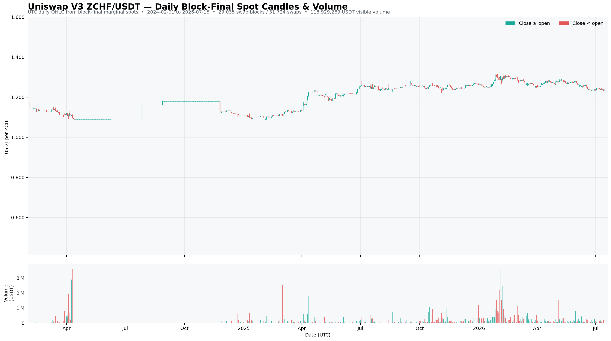
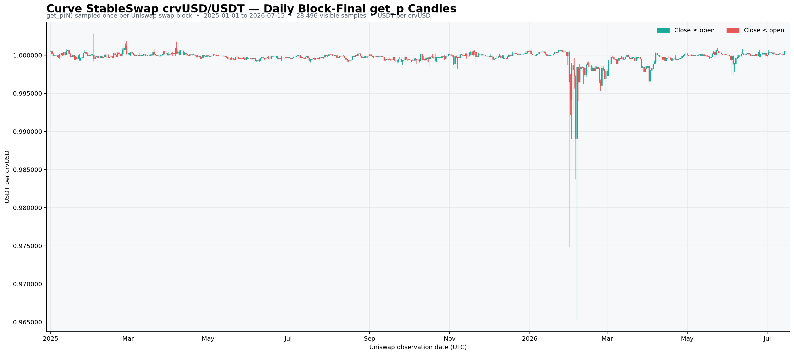
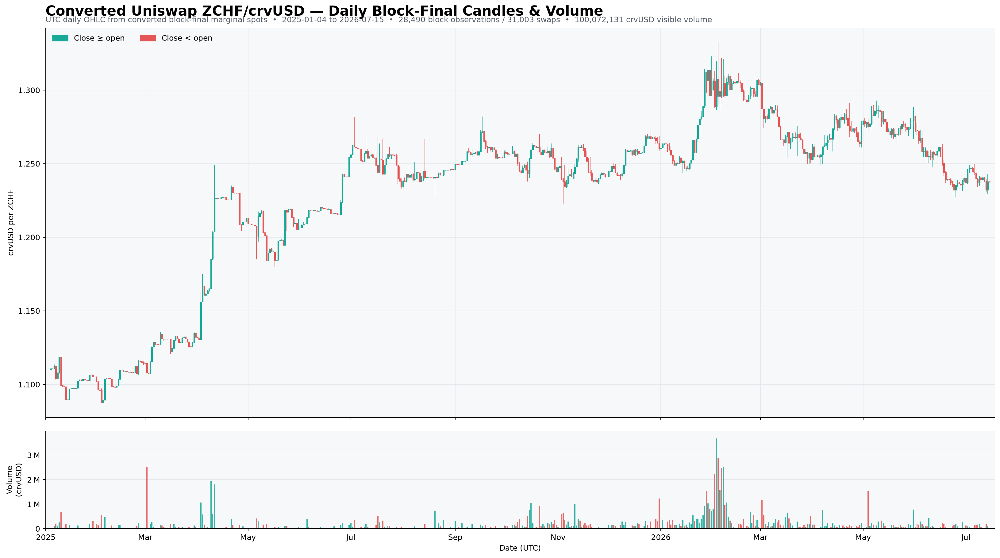
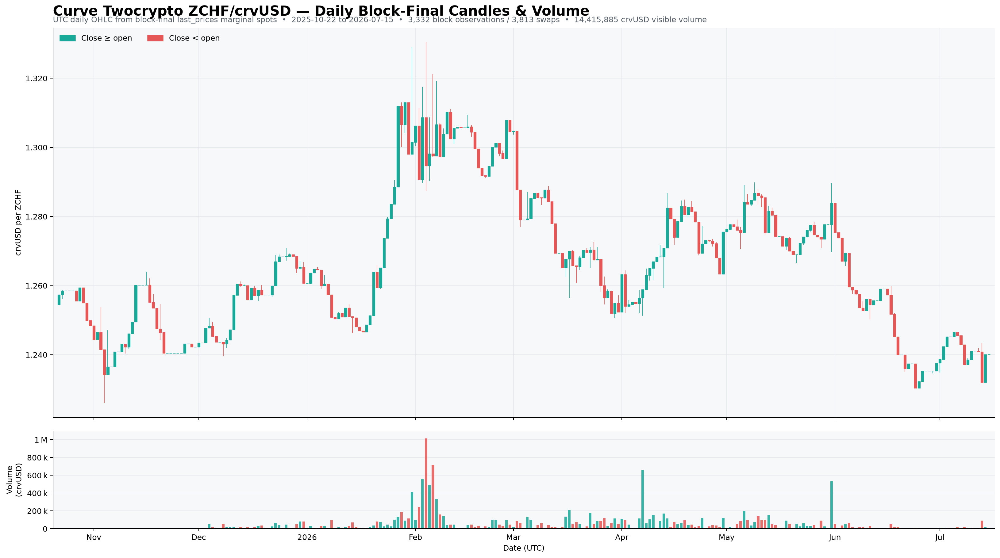
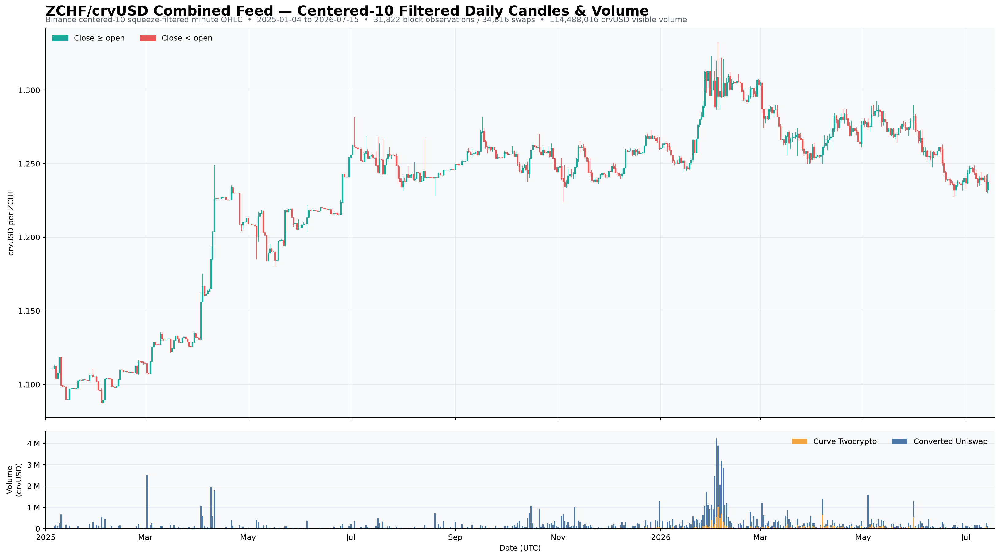

ZCHF Data Retrieval
2 Ethereum ZCHF pools supply the historical market data used by the simulations:
The Base Aerodrome pool used in the borrow-cap analysis is not included in this historical simulation feed.
Uniswap ZCHF/USDT
- Deployment date = 2024-01-31.
- Deployment block = 19,122,801.
1-minute OHLC candles are constructed by:
- Retrieving every swap with its block, transaction index, and log index.
- Reading the end-of-block spot price for every swap block.
- Forward-filling that spot price until the next swap block.

There is little useful activity before 2025, so the analysis uses the most recent 18 months.
Uniswap conversion to ZCHF/crvUSD
Each ZCHF/USDT swap-block price is divided by the spot price at the same block from the Curve crvUSD/USDT pool.
get_p data used for conversion.
The contemporaneous crvUSD/USDT price produces the following converted Uniswap ZCHF/crvUSD feed.

Curve ZCHF/crvUSD
- Deployment date = 2025-10-16.
- Deployment block = 23,588,550.
1-minute OHLC candles are constructed by:
- Retrieving every swap with its block, transaction index, and log index.
- Reading the end-of-block
last_pricesvalue for every swap block. - Forward-filling that spot price until the next swap block.

Combined 18-month filtered feed
The combined feed contains:
- 18 months of converted Uniswap ZCHF/crvUSD observations.
- 9 months of direct Curve ZCHF/crvUSD observations.
- Highs and lows filtered with the centered Binance candle-filtering method.
